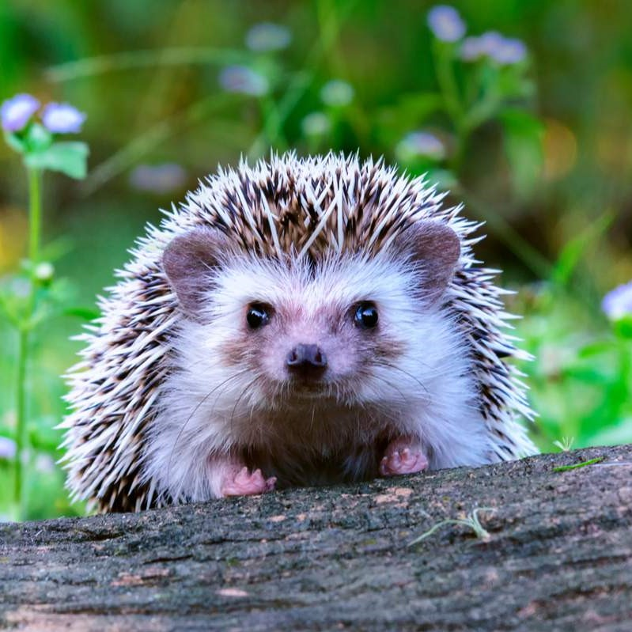
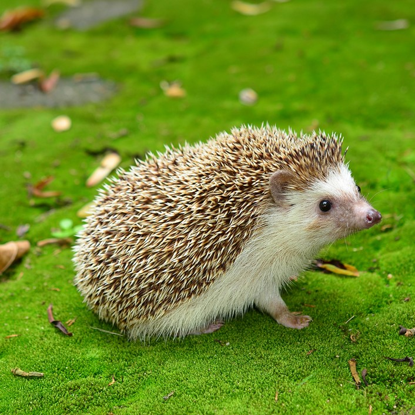
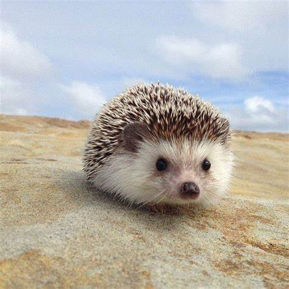

Ensemble, protégeons les hérissons

Le Hameau des hérissons est une association de la loi 1901 pour la protection des hérissons : erinaceus europaeus, c'est-à-dire : nous ! Son nom sonne comme celui d'un petit village et on trouve ça sympa !
Notre association informes, conseils, et fait de la prévention afin de venir en aide à nos si fragiles amies les hérissons qui sont, plus que jamais menacer par l’hommes


D'après une association de défense du mammifère, deux tiers des hérissons ont disparu en France en 20 ans, et, d'ici à 2050, l'espèce pourrait être rayée de l'Hexagone